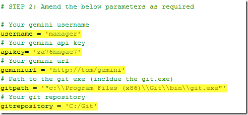
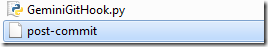
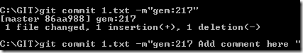

Download the Git connector.
Note Git CodeReview has been tested and confirmed to work with bonobogitserver.
Ensure that you have Python 2.x installed.
Edit the "GeminiGitHook.py" script and change the following variables as required: username, apikey, geminiurl, gitpath, gitrepository

Locate the "hooks" directory for your GIT repository (for example C:\GIT\.git\hooks)
Put the "GeminiGitHook.py" file into the "hooks" directory.
If missing, create the "post-commit" file and insert a line that represents the full path to the "GeminiGitHook.py" script (e.g. C:/MyRepository/.git/hooks/GeminiGitHook.py).

When you commit files to Git, simply start your commit message with "gem:XXX" ("XXX" represents a Gemini Item Id. In this example we will be using 217 as the Id.
Open up Command Prompt and run the following command replacing “217” with the issue Id you wish to update.

All commited files and comments appear under Code Review as follows